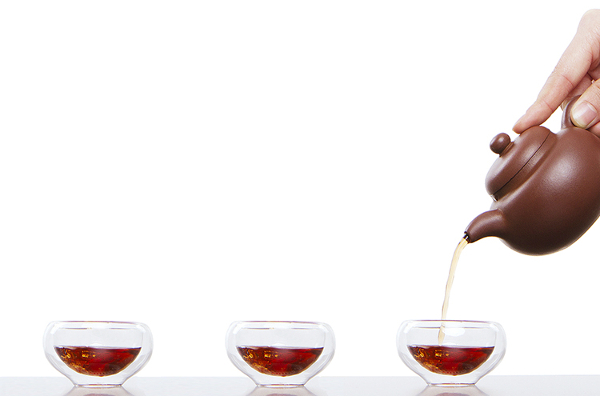

小茶一丛为国内首个“甄选”概念的茶叶品牌， 致力于“为你甄选本真茶”，建立评茶专家团队， 选择独树一帜的“甄选”方式，至简人与茶的距离， 为消费者解决找茶、辨茶、选茶难题，回归茶叶本真。 同时挖掘每款茶的文化个性，使鲜为人知的, 至真茶人茶事得以传播，升级茶生活。
建立专业评茶专家团队
历经103218公里
遍选全国各大茶区
考察476个茶园
拜访619位茶农
评测2000多个茶样
2015-2018 广州小茶一丛信息科技有限公司 版权所有
粤ICP备16008366号
Copyright © 2015-2018 Guangzhou xiaocha360 IT Co LTD All Rights Reserved